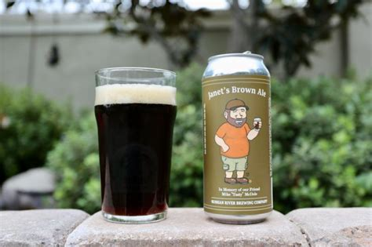

Janet's Brown Ale

Description
Janet’s Brown Ale has quite the pedigree. Mike “Tasty” McDole took home a
medal when this recipe won gold in the Brown Ale category in the National
Homebrew Competition (NHC) in 2004. The award-winning recipe was then
featured in Jamil Zainasheff and John Palmer’s book, Brewing Classic
Styles, as an example of a bigger, hoppier American Brown Ale. In 2009,
McDole took gold again at the NHC with an updated recipe that he
categorized as Imperial Brown Ale, but this time in the Specialty Beers
category. Though Janet’s Brown Ale deviates a bit from the style
guidelines for a traditional American Brown Ale, surely you will not be
upset by the higher IBUs and ABV after taking a sip!
Ingredients
Malts & Adjuncts
- 11.8 lb. (5.35 kg) pale malt
- 1.3 lb. (590 g) dextrin malt
- 1 lb. (454 g) 40L crystal malt
- 0.8 lb. (363 g) wheat malt
- 0.4 lb. (181 g) 350L chocolate malt
- 0.5 lb. (227 g) corn sugar @ 0 min
Hops
- 1.25 oz. (35 g) US Northern Brewer pellet hops, 5.1% a.a. (mash)
- 1.25 oz. (35 g) US Northern Brewer pellet hops, 5.1% a.a. (60 min)
- 0.75 oz. (21 g) US Northern Brewer pellet hops, 5.1% a.a. (15 min)
- 1.25 oz. (35 g) Cascade pellet hops, 5.6% a.a. (10 min)
- 1.75 oz. (50 g) Cascade whole hops, 5.8% a.a. (0 min, hopback)
- 1.75 oz. (50 g) Centennial pellet hops, 10.5% a.a. (dry hop)
Yeast
Pick your choice of:
- Lallemand LalBrew BRY-97 West Coast Ale Yeast
- Fermentis US-05
- Wyeast 1217-PC West Coast IPA
- White Labs WLP001 California Ale Yeast
Additional Items
- 1 cup (190 g) corn sugar (if priming in bottles)
Steps
- Mash the malts with the mash hops at 154°F (68°C) for 30 minutes.
- Raise to 170°F (77°C) and hold for 15 minutes.
- Sparge at 170°F (77°C) for 45 minutes.
- Collect 6.5 gallons (24.5 L) of wort.
- Heat to boiling and boil the wort 60 minutes, adding hops at the
times indicated in the recipe.
- Adjust original gravity post-boil with reverse osmosis water as
required.
- Chill the wort to approximately 68˚F (20˚C).
- Pitch yeast, and ferment between 60 ˚F and 68˚F (15.5–20˚C) until
complete.
- Prime and bottle condition, or serve from keg if naturally
conditioned during aging.